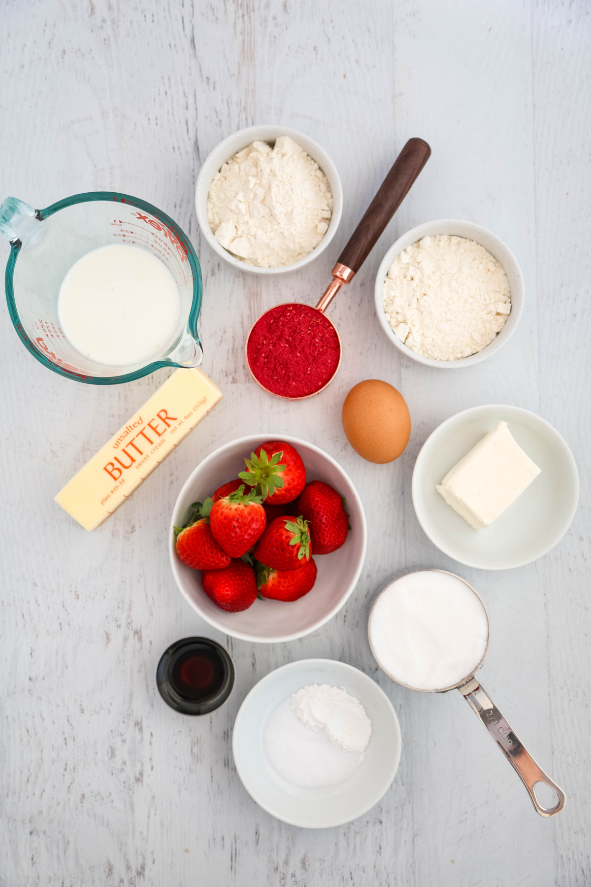

Strawberry Cupcakes
Simple Recipe
This strawberry cupcake recipe is like a little party in a wrapper bright and bursting with fresh berry goodness. The strawberry purée keeps every bite soft and juicy, while the vanilla and butter give it that cozy, homemade magic. They're the kind of cupcakes that disappear fast at birthdays, picnics, or honestly any day that needs a pop of pink fun!
Ingerdiants
- 1 ½ cups all-purpose flour
- 1 tsp baking powder
- ¼ tsp salt
- ½ cup unsalted butter (softened)
- ¾ cup granulated sugar
- 2 large eggs
- ½ cup fresh strawberry purée
- ¼ cup milk
- 1 tsp vanilla extract

Making the Cupcake!
- Preheat your oven to 350°F (175°C) and line a cupcake pan with paper liners.
- In a medium bowl, whisk together the flour, baking powder, and salt.
- In a separate bowl, beat the butter and sugar until light and fluffy.
- Add the eggs one at a time, mixing well after each addition.
- Stir in the strawberry purée, milk, and vanilla extract until smooth.
- Add the dry ingredients to the wet ingredients and mix gently until just combined.
- Divide the batter evenly among the cupcake liners, filling each about 2/3 full.
- Bake for 18-22 minutes, or until a toothpick inserted in the center comes out clean.
- Let the cupcakes cool completely before frosting.